卷积神经网络
Contents
卷积神经网络#
from IPython.display import Image
CNN 结构#
Image(filename='figures/14_01.png', width=700)
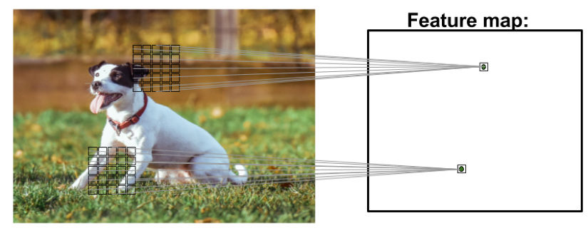
离散卷积#
Image(filename='figures/14_02.png', width=700)
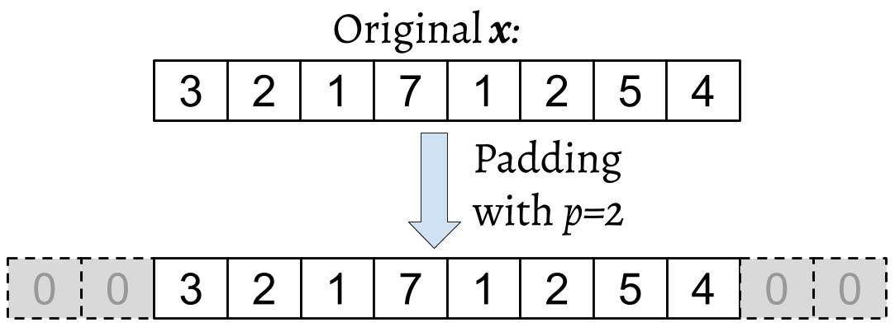
Image(filename='figures/14_03.png', width=700)
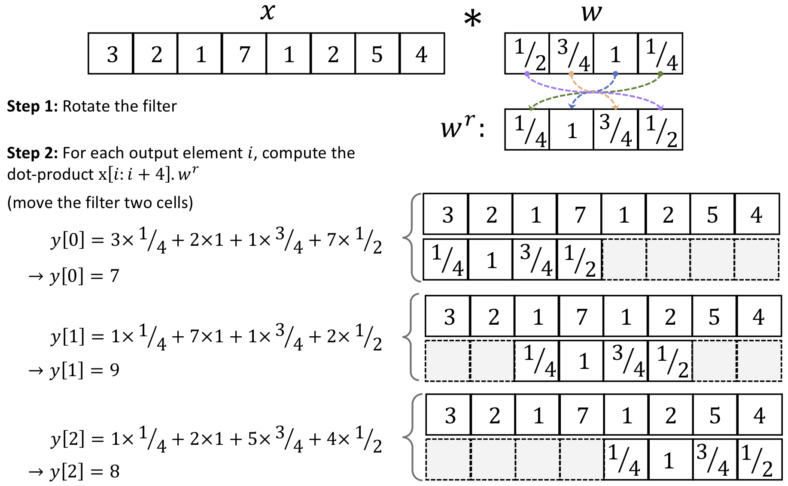
填充#
Image(filename='figures/14_04.png', width=700)
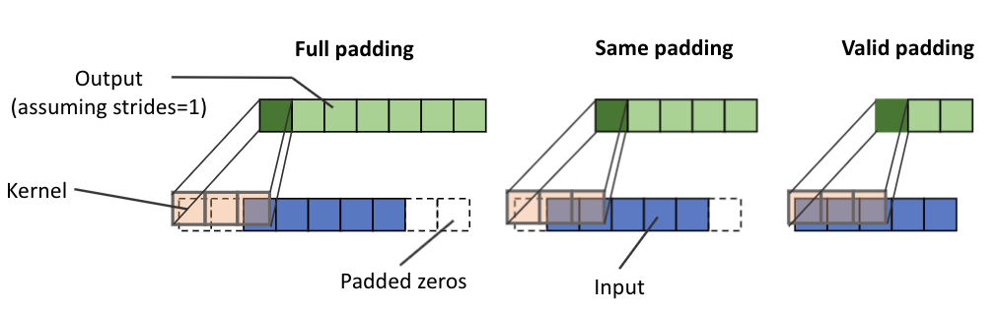
卷积输出大小#
import torch
import numpy as np
print(f'PyTorch version: {torch.__version__}')
print(f'NumPy version: {np.__version__}')
PyTorch version: 1.11.0
NumPy version: 1.21.6
def conv1d(x, w, p=0, s=1):
w_rot = np.array(w[::-1])
x_padded = np.array(x)
if p > 0:
zero_pad = np.zeros(shape=p)
x_padded = np.concatenate([zero_pad, x_padded, zero_pad])
res = []
for i in range(0, int((len(x_padded) - len(w_rot))) + 1, s):
res.append(np.sum(x_padded[i:i + w_rot.shape[0]] * w_rot))
return np.array(res)
## Testing:
x = [1, 3, 2, 4, 5, 6, 1, 3]
w = [1, 0, 3, 1, 2]
print(f'Conv1d Implementation: {conv1d(x, w, p=2, s=1)}')
print(f'Numpy Results: {np.convolve(x, w, mode="same")}')
Conv1d Implementation: [ 5. 14. 16. 26. 24. 34. 19. 22.]
Numpy Results: [ 5 14 16 26 24 34 19 22]
二维卷积#
Image(filename='figures/14_05.png', width=700)
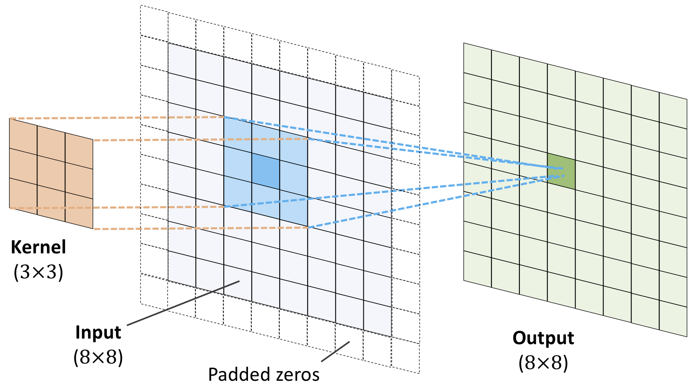
Image(filename='figures/14_06.png', width=600)
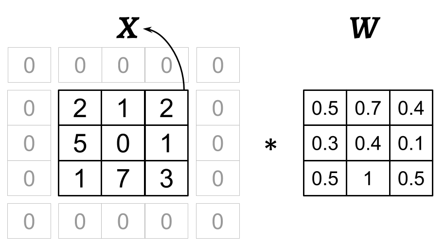
Image(filename='figures/14_07.png', width=800)
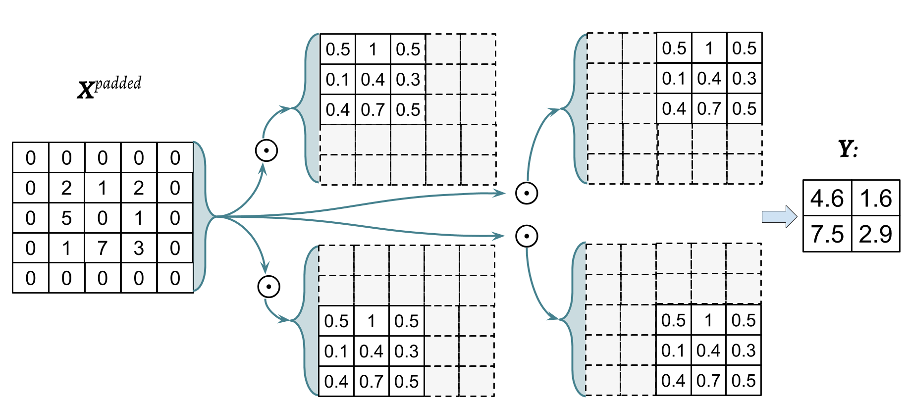
import scipy.signal
def conv2d(X, W, p=(0, 0), s=(1, 1)):
W_rot = np.array(W)[::-1, ::-1]
X_orig = np.array(X)
n1 = X_orig.shape[0] + 2 * p[0]
n2 = X_orig.shape[1] + 2 * p[1]
X_padded = np.zeros(shape=(n1, n2))
X_padded[p[0]:p[0] + X_orig.shape[0], p[1]:p[1] + X_orig.shape[1]] = X_orig
res = []
for i in range(0,
int((X_padded.shape[0] - W_rot.shape[0]) / s[0]) + 1, s[0]):
res.append([])
for j in range(0,
int((X_padded.shape[1] - W_rot.shape[1]) / s[1]) + 1,
s[1]):
X_sub = X_padded[i:i + W_rot.shape[0], j:j + W_rot.shape[1]]
res[-1].append(np.sum(X_sub * W_rot))
return (np.array(res))
X = [[1, 3, 2, 4], [5, 6, 1, 3], [1, 2, 0, 2], [3, 4, 3, 2]]
W = [[1, 0, 3], [1, 2, 1], [0, 1, 1]]
print(f'Conv2d Implementation:\n {conv2d(X, W, p=(1, 1), s=(1, 1))}')
print(f'SciPy Results:\n {scipy.signal.convolve2d(X, W, mode="same")}')
Conv2d Implementation:
[[11. 25. 32. 13.]
[19. 25. 24. 13.]
[13. 28. 25. 17.]
[11. 17. 14. 9.]]
SciPy Results:
[[11 25 32 13]
[19 25 24 13]
[13 28 25 17]
[11 17 14 9]]
子抽样层#
Image(filename='figures/14_08.png', width=700)
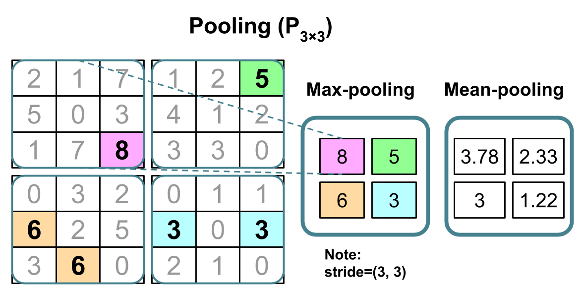
组装 CNN#
Image(filename='figures/14_09.png', width=800)
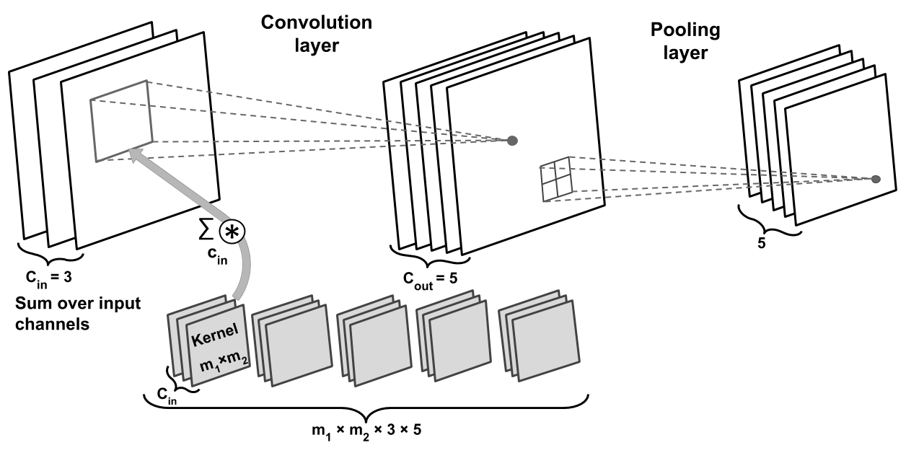
import torch
from torchvision.io import read_image
img = read_image('figures/example-image.png')
print(f'Image shape: {img.shape}')
print(f'Number of channels: {img.shape[0]}')
print(f'Image data type: {img.dtype}')
print(img[:, 100:102, 100:102])
Image shape: torch.Size([3, 252, 221])
Number of channels: 3
Image data type: torch.uint8
tensor([[[179, 182],
[180, 182]],
[[134, 136],
[135, 137]],
[[110, 112],
[111, 113]]], dtype=torch.uint8)
L2 正则化#
Image(filename='figures/14_10.png', width=700)
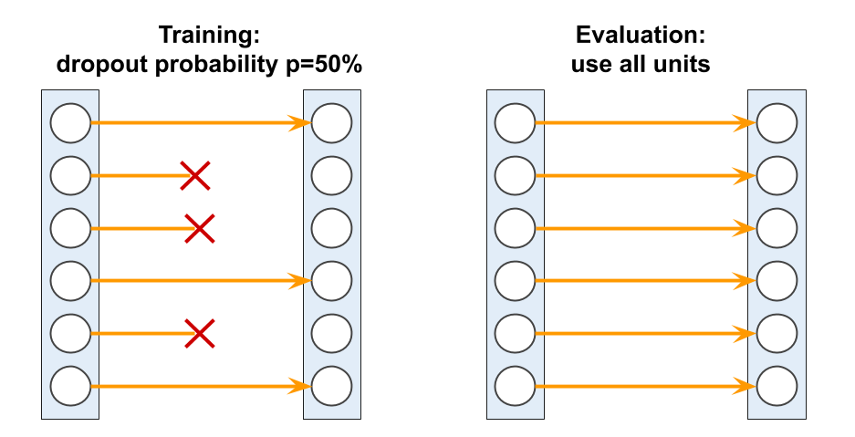
import torch.nn as nn
loss_func = nn.BCELoss()
loss = loss_func(torch.tensor([0.9]), torch.tensor([1.0]))
l2_lambda = 0.001
conv_layer = nn.Conv2d(in_channels=3, out_channels=5, kernel_size=5)
l2_penalty = l2_lambda * sum([(p**2).sum() for p in conv_layer.parameters()])
loss_with_penalty = loss + l2_penalty
linear_layer = nn.Linear(10, 16)
l2_penalty = l2_lambda * sum([(p**2).sum() for p in linear_layer.parameters()])
loss_with_penalty = loss + l2_penalty
损失函数#
nn.BCELoss()from_logits=Falsefrom_logits=True
nn.CrossEntropyLoss()from_logits=Falsefrom_logits=True
Image(filename='figures/14_11.png', width=800)
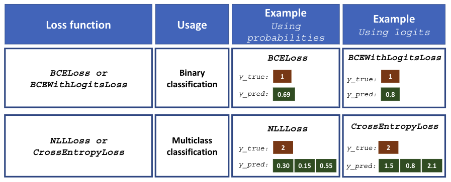
####### Binary Cross-entropy
logits = torch.tensor([0.8])
probas = torch.sigmoid(logits)
target = torch.tensor([1.0])
bce_loss_fn = nn.BCELoss()
bce_logits_loss_fn = nn.BCEWithLogitsLoss()
print(f'BCE (w Probas): {bce_loss_fn(probas, target):.4f}')
print(f'BCE (w Logits): {bce_logits_loss_fn(logits, target):.4f}')
####### Categorical Cross-entropy
logits = torch.tensor([[1.5, 0.8, 2.1]])
probas = torch.softmax(logits, dim=1)
target = torch.tensor([2])
cce_loss_fn = nn.NLLLoss()
cce_logits_loss_fn = nn.CrossEntropyLoss()
print(f'CCE (w Logits): {cce_logits_loss_fn(logits, target):.4f}')
print(f'CCE (w Probas): {cce_loss_fn(torch.log(probas), target):.4f}')
BCE (w Probas): 0.3711
BCE (w Logits): 0.3711
CCE (w Logits): 0.5996
CCE (w Probas): 0.5996
多层 CNN#
Image(filename='figures/14_12.png', width=800)
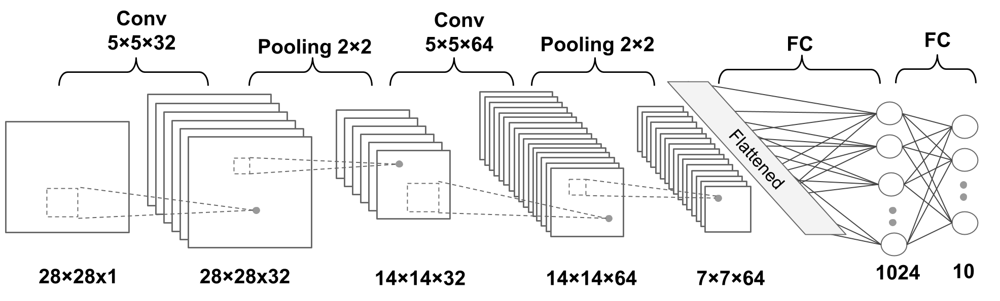
加载并预处理数据#
import torchvision
from torchvision import transforms
from torchvision.datasets import *
image_path = '../../datasets/torch'
transform = transforms.Compose([transforms.ToTensor()])
mnist = MNIST(root=image_path,
train=True,
transform=transform,
download=True)
from torch.utils.data import Subset, DataLoader
mnist_valid = Subset(mnist, torch.arange(10000))
mnist_train = Subset(mnist, torch.arange(10000, len(mnist)))
mnist_test = MNIST(root=image_path,
train=False,
transform=transform,
download=False)
batch_size = 64
torch.manual_seed(1)
train_dl = DataLoader(mnist_train, batch_size, shuffle=True)
valid_dl = DataLoader(mnist_valid, batch_size, shuffle=False)
搭建模型#
model = nn.Sequential()
model.add_module(
'conv1', nn.Conv2d(in_channels=1,
out_channels=32,
kernel_size=5,
padding=2))
model.add_module('relu1', nn.ReLU())
model.add_module('pool1', nn.MaxPool2d(kernel_size=2))
model.add_module(
'conv2',
nn.Conv2d(in_channels=32, out_channels=64, kernel_size=5, padding=2))
model.add_module('relu2', nn.ReLU())
model.add_module('pool2', nn.MaxPool2d(kernel_size=2))
x = torch.ones((4, 1, 28, 28))
model(x).shape
torch.Size([4, 64, 7, 7])
model.add_module('flatten', nn.Flatten())
x = torch.ones((4, 1, 28, 28))
model(x).shape
torch.Size([4, 3136])
model.add_module('fc1', nn.Linear(3136, 1024))
model.add_module('relu3', nn.ReLU())
model.add_module('dropout', nn.Dropout(p=0.5))
model.add_module('fc2', nn.Linear(1024, 10))
device = torch.device('cuda' if torch.cuda.is_available() else 'cpu')
model = model.to(device)
loss_fn = nn.CrossEntropyLoss()
optimizer = torch.optim.Adam(model.parameters(), lr=0.001)
def train(model, num_epochs, train_dl, valid_dl):
loss_hist_train = [0] * num_epochs
accuracy_hist_train = [0] * num_epochs
loss_hist_valid = [0] * num_epochs
accuracy_hist_valid = [0] * num_epochs
for epoch in range(num_epochs):
model.train()
for x_batch, y_batch in train_dl:
x_batch = x_batch.to(device)
y_batch = y_batch.to(device)
pred = model(x_batch)
loss = loss_fn(pred, y_batch)
loss.backward()
optimizer.step()
optimizer.zero_grad()
loss_hist_train[epoch] += loss.item() * y_batch.size(0)
is_correct = (torch.argmax(pred, dim=1) == y_batch).float()
accuracy_hist_train[epoch] += is_correct.sum().cpu()
loss_hist_train[epoch] /= len(train_dl.dataset)
accuracy_hist_train[epoch] /= len(train_dl.dataset)
model.eval()
with torch.no_grad():
for x_batch, y_batch in valid_dl:
x_batch = x_batch.to(device)
y_batch = y_batch.to(device)
pred = model(x_batch)
loss = loss_fn(pred, y_batch)
loss_hist_valid[epoch] += loss.item() * y_batch.size(0)
is_correct = (torch.argmax(pred, dim=1) == y_batch).float()
accuracy_hist_valid[epoch] += is_correct.sum().cpu()
loss_hist_valid[epoch] /= len(valid_dl.dataset)
accuracy_hist_valid[epoch] /= len(valid_dl.dataset)
print(
f'Epoch {epoch+1} accuracy: {accuracy_hist_train[epoch]:.4f} val_accuracy: {accuracy_hist_valid[epoch]:.4f}'
)
return loss_hist_train, loss_hist_valid, accuracy_hist_train, accuracy_hist_valid
torch.manual_seed(1)
num_epochs = 10
hist = train(model, num_epochs, train_dl, valid_dl)
Epoch 1 accuracy: 0.9484 val_accuracy: 0.9812
Epoch 2 accuracy: 0.9841 val_accuracy: 0.9870
Epoch 3 accuracy: 0.9885 val_accuracy: 0.9873
Epoch 4 accuracy: 0.9911 val_accuracy: 0.9842
---------------------------------------------------------------------------
KeyboardInterrupt Traceback (most recent call last)
/Users/integzz/Documents/blog-bio/pytorch/3-cnn.ipynb Cell 42' in <cell line: 50>()
<a href='vscode-notebook-cell:/Users/integzz/Documents/blog-bio/pytorch/3-cnn.ipynb#ch0000041?line=47'>48</a> torch.manual_seed(1)
<a href='vscode-notebook-cell:/Users/integzz/Documents/blog-bio/pytorch/3-cnn.ipynb#ch0000041?line=48'>49</a> num_epochs = 10
---> <a href='vscode-notebook-cell:/Users/integzz/Documents/blog-bio/pytorch/3-cnn.ipynb#ch0000041?line=49'>50</a> hist = train(model, num_epochs, train_dl, valid_dl)
/Users/integzz/Documents/blog-bio/pytorch/3-cnn.ipynb Cell 42' in train(model, num_epochs, train_dl, valid_dl)
<a href='vscode-notebook-cell:/Users/integzz/Documents/blog-bio/pytorch/3-cnn.ipynb#ch0000041?line=15'>16</a> pred = model(x_batch)
<a href='vscode-notebook-cell:/Users/integzz/Documents/blog-bio/pytorch/3-cnn.ipynb#ch0000041?line=16'>17</a> loss = loss_fn(pred, y_batch)
---> <a href='vscode-notebook-cell:/Users/integzz/Documents/blog-bio/pytorch/3-cnn.ipynb#ch0000041?line=17'>18</a> loss.backward()
<a href='vscode-notebook-cell:/Users/integzz/Documents/blog-bio/pytorch/3-cnn.ipynb#ch0000041?line=18'>19</a> optimizer.step()
<a href='vscode-notebook-cell:/Users/integzz/Documents/blog-bio/pytorch/3-cnn.ipynb#ch0000041?line=19'>20</a> optimizer.zero_grad()
File /opt/homebrew/Caskroom/mambaforge/base/envs/kaggle/lib/python3.10/site-packages/torch/_tensor.py:363, in Tensor.backward(self, gradient, retain_graph, create_graph, inputs)
<a href='file:///opt/homebrew/Caskroom/mambaforge/base/envs/kaggle/lib/python3.10/site-packages/torch/_tensor.py?line=353'>354</a> if has_torch_function_unary(self):
<a href='file:///opt/homebrew/Caskroom/mambaforge/base/envs/kaggle/lib/python3.10/site-packages/torch/_tensor.py?line=354'>355</a> return handle_torch_function(
<a href='file:///opt/homebrew/Caskroom/mambaforge/base/envs/kaggle/lib/python3.10/site-packages/torch/_tensor.py?line=355'>356</a> Tensor.backward,
<a href='file:///opt/homebrew/Caskroom/mambaforge/base/envs/kaggle/lib/python3.10/site-packages/torch/_tensor.py?line=356'>357</a> (self,),
(...)
<a href='file:///opt/homebrew/Caskroom/mambaforge/base/envs/kaggle/lib/python3.10/site-packages/torch/_tensor.py?line=360'>361</a> create_graph=create_graph,
<a href='file:///opt/homebrew/Caskroom/mambaforge/base/envs/kaggle/lib/python3.10/site-packages/torch/_tensor.py?line=361'>362</a> inputs=inputs)
--> <a href='file:///opt/homebrew/Caskroom/mambaforge/base/envs/kaggle/lib/python3.10/site-packages/torch/_tensor.py?line=362'>363</a> torch.autograd.backward(self, gradient, retain_graph, create_graph, inputs=inputs)
File /opt/homebrew/Caskroom/mambaforge/base/envs/kaggle/lib/python3.10/site-packages/torch/autograd/__init__.py:173, in backward(tensors, grad_tensors, retain_graph, create_graph, grad_variables, inputs)
<a href='file:///opt/homebrew/Caskroom/mambaforge/base/envs/kaggle/lib/python3.10/site-packages/torch/autograd/__init__.py?line=167'>168</a> retain_graph = create_graph
<a href='file:///opt/homebrew/Caskroom/mambaforge/base/envs/kaggle/lib/python3.10/site-packages/torch/autograd/__init__.py?line=169'>170</a> # The reason we repeat same the comment below is that
<a href='file:///opt/homebrew/Caskroom/mambaforge/base/envs/kaggle/lib/python3.10/site-packages/torch/autograd/__init__.py?line=170'>171</a> # some Python versions print out the first line of a multi-line function
<a href='file:///opt/homebrew/Caskroom/mambaforge/base/envs/kaggle/lib/python3.10/site-packages/torch/autograd/__init__.py?line=171'>172</a> # calls in the traceback and some print out the last line
--> <a href='file:///opt/homebrew/Caskroom/mambaforge/base/envs/kaggle/lib/python3.10/site-packages/torch/autograd/__init__.py?line=172'>173</a> Variable._execution_engine.run_backward( # Calls into the C++ engine to run the backward pass
<a href='file:///opt/homebrew/Caskroom/mambaforge/base/envs/kaggle/lib/python3.10/site-packages/torch/autograd/__init__.py?line=173'>174</a> tensors, grad_tensors_, retain_graph, create_graph, inputs,
<a href='file:///opt/homebrew/Caskroom/mambaforge/base/envs/kaggle/lib/python3.10/site-packages/torch/autograd/__init__.py?line=174'>175</a> allow_unreachable=True, accumulate_grad=True)
KeyboardInterrupt:
import matplotlib.pyplot as plt
x_arr = np.arange(len(hist[0])) + 1
_, axes = plt.subplots(1, 2, figsize=(10, 4), constrained_layout=True)
axes[0].plot(x_arr, hist[0], '-o', label='Train loss')
axes[0].plot(x_arr, hist[1], '--<', label='Validation loss')
axes[0].set_xlabel('Epoch', size='medium')
axes[0].set_ylabel('Loss', size='medium')
axes[0].legend(fontsize=15)
axes[1].plot(x_arr, hist[2], '-o', label='Train acc.')
axes[1].plot(x_arr, hist[3], '--<', label='Validation acc.')
axes[1].set_xlabel('Epoch', size='medium')
axes[1].set_ylabel('Accuracy', size='medium')
axes[1].legend(fontsize=15)
#plt.savefig('figures/14_13.png')
plt.show()
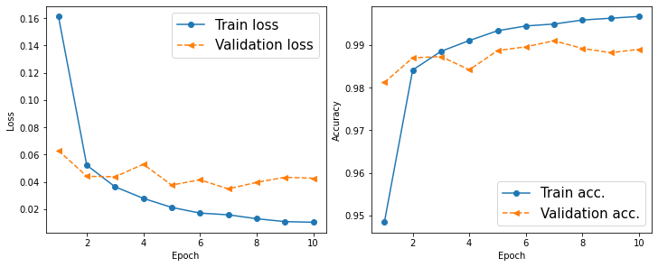
# torch.cuda.synchronize()
model_cpu = model.cpu()
pred = model(mnist_test.data.unsqueeze(1) / 255.)
is_correct = (torch.argmax(pred, dim=1) == mnist_test.targets).float()
print(f'Test accuracy: {is_correct.mean():.4f}')
Test accuracy: 0.9913
_, axes = plt.subplots(2, 6, figsize=(12, 8), constrained_layout=True)
for ind, ax in enumerate(axes.flatten()):
ax.set(xticks=[], yticks=[])
img = mnist_test[ind][0][0, :, :]
pred = model(img.unsqueeze(0).unsqueeze(1))
y_pred = torch.argmax(pred)
ax.imshow(img, cmap='gray_r')
ax.text(0.9,
0.1,
y_pred.item(),
size=15,
color='blue',
horizontalalignment='center',
verticalalignment='center',
transform=ax.transAxes)
#plt.savefig('figures/14_14.png')
plt.show()
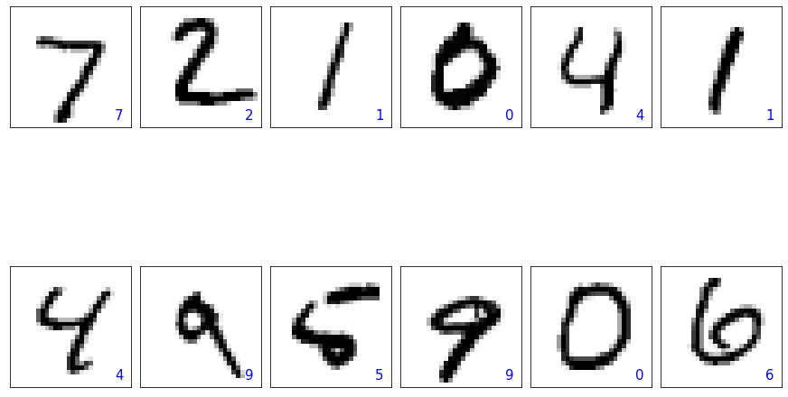
path = '../../datasets/torch/mnist-cnn.ph'
torch.save(model, path)
面部分类#
加载数据集#
image_path = '../../datasets/torch'
celeba_train = CelebA(image_path,
split='train',
target_type='attr',
download=False)
celeba_valid = CelebA(image_path,
split='valid',
target_type='attr',
download=False)
celeba_test = CelebA(image_path,
split='test',
target_type='attr',
download=False)
print(f'Train set: {len(celeba_train)}')
print(f'Validation set: {len(celeba_valid)}')
print(f'Test set: {len(celeba_test)}')
Train set: 162770
Validation set: 19867
Test set: 19962
图像变换、数据放大#
## take 5 examples
fig = plt.figure(figsize=(16, 8.5))
## Column 1: cropping to a bounding-box
ax = fig.add_subplot(2, 5, 1)
img, attr = celeba_train[0]
ax.set_title('Crop to a \nbounding-box', size='medium')
ax.imshow(img)
ax = fig.add_subplot(2, 5, 6)
img_cropped = transforms.functional.crop(img, 50, 20, 128, 128)
ax.imshow(img_cropped)
## Column 2: flipping (horizontally)
ax = fig.add_subplot(2, 5, 2)
img, attr = celeba_train[1]
ax.set_title('Flip (horizontal)', size='medium')
ax.imshow(img)
ax = fig.add_subplot(2, 5, 7)
img_flipped = transforms.functional.hflip(img)
ax.imshow(img_flipped)
## Column 3: adjust contrast
ax = fig.add_subplot(2, 5, 3)
img, attr = celeba_train[2]
ax.set_title('Adjust constrast', size='medium')
ax.imshow(img)
ax = fig.add_subplot(2, 5, 8)
img_adj_contrast = transforms.functional.adjust_contrast(img,
contrast_factor=2)
ax.imshow(img_adj_contrast)
## Column 4: adjust brightness
ax = fig.add_subplot(2, 5, 4)
img, attr = celeba_train[3]
ax.set_title('Adjust brightness', size='medium')
ax.imshow(img)
ax = fig.add_subplot(2, 5, 9)
img_adj_brightness = transforms.functional.adjust_brightness(
img, brightness_factor=1.3)
ax.imshow(img_adj_brightness)
## Column 5: cropping from image center
ax = fig.add_subplot(2, 5, 5)
img, attr = celeba_train[4]
ax.set_title('Center crop\nand resize', size='medium')
ax.imshow(img)
ax = fig.add_subplot(2, 5, 10)
img_center_crop = transforms.functional.center_crop(img,
[0.7 * 218, 0.7 * 178])
img_resized = transforms.functional.resize(img_center_crop, size=(218, 178))
ax.imshow(img_resized)
# plt.savefig('figures/14_14.png', dpi=300)
plt.show()
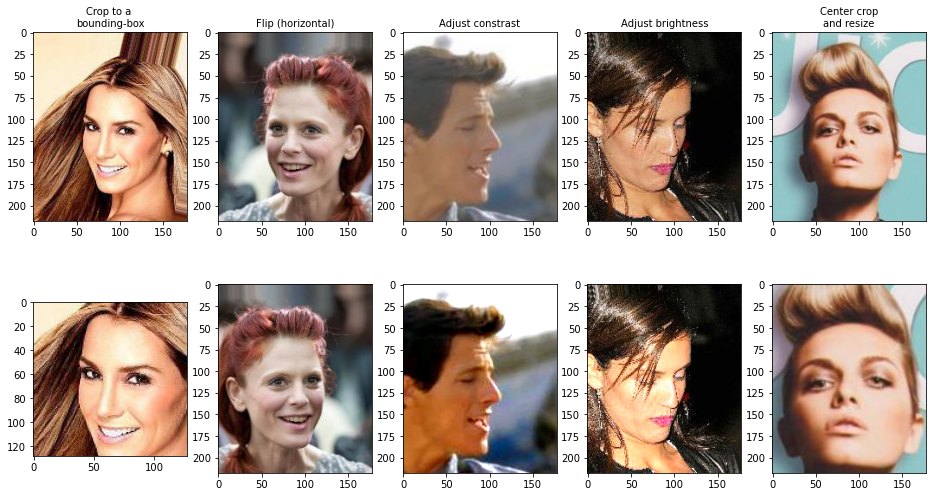
torch.manual_seed(1)
fig = plt.figure(figsize=(14, 12))
for i, (img, attr) in enumerate(celeba_train):
ax = fig.add_subplot(3, 4, i * 4 + 1)
ax.imshow(img)
if i == 0:
ax.set_title('Orig.', size='medium')
ax = fig.add_subplot(3, 4, i * 4 + 2)
img_transform = transforms.Compose([transforms.RandomCrop([178, 178])])
img_cropped = img_transform(img)
ax.imshow(img_cropped)
if i == 0:
ax.set_title('Step 1: Random crop', size='medium')
ax = fig.add_subplot(3, 4, i * 4 + 3)
img_transform = transforms.Compose([transforms.RandomHorizontalFlip()])
img_flip = img_transform(img_cropped)
ax.imshow(img_flip)
if i == 0:
ax.set_title('Step 2: Random flip', size='medium')
ax = fig.add_subplot(3, 4, i * 4 + 4)
img_resized = transforms.functional.resize(img_flip, size=(128, 128))
ax.imshow(img_resized)
if i == 0:
ax.set_title('Step 3: Resize', size='medium')
if i == 2:
break
# plt.savefig('figures/14_15.png', dpi=300)
plt.show()
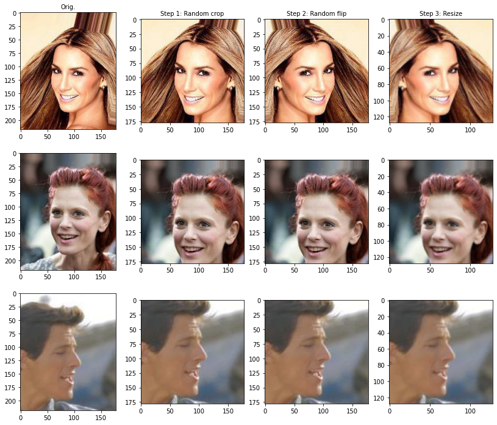
get_smile = lambda attr: attr[18]
transform_train = transforms.Compose([
transforms.RandomCrop([178, 178]),
transforms.RandomHorizontalFlip(),
transforms.Resize([64, 64]),
transforms.ToTensor(),
])
transform = transforms.Compose([
transforms.CenterCrop([178, 178]),
transforms.Resize([64, 64]),
transforms.ToTensor(),
])
celeba_train = CelebA(image_path,
split='train',
target_type='attr',
download=False,
transform=transform_train,
target_transform=get_smile)
torch.manual_seed(1)
data_loader = DataLoader(celeba_train, batch_size=2)
fig = plt.figure(figsize=(15, 6))
num_epochs = 5
for j in range(num_epochs):
img_batch, label_batch = next(iter(data_loader))
img = img_batch[0]
ax = fig.add_subplot(2, 5, j + 1)
ax.set(xticks=[], yticks=[])
ax.set_title(f'Epoch {j}:', size='medium')
ax.imshow(img.permute(1, 2, 0))
img = img_batch[1]
ax = fig.add_subplot(2, 5, j + 6)
ax.set(xticks=[], yticks=[])
ax.imshow(img.permute(1, 2, 0))
#plt.savefig('figures/14_16.png', dpi=300)
plt.show()
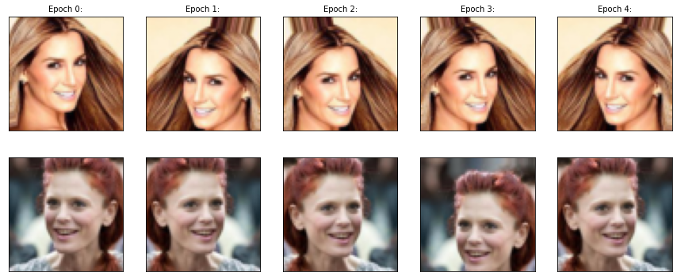
celeba_valid = CelebA(image_path,
split='valid',
target_type='attr',
download=False,
transform=transform,
target_transform=get_smile)
celeba_test = CelebA(image_path,
split='test',
target_type='attr',
download=False,
transform=transform,
target_transform=get_smile)
celeba_train = Subset(celeba_train, torch.arange(16000))
celeba_valid = Subset(celeba_valid, torch.arange(1000))
print(f'Train set: {len(celeba_train)}')
print(f'Validation set: {len(celeba_valid)}')
Train set: 16000
Validation set: 1000
batch_size = 32
torch.manual_seed(1)
train_dl = DataLoader(celeba_train, batch_size, shuffle=True)
valid_dl = DataLoader(celeba_valid, batch_size, shuffle=False)
test_dl = DataLoader(celeba_test, batch_size, shuffle=False)
训练#
Global Average Pooling
Image(filename='figures/14_13.png', width=800)
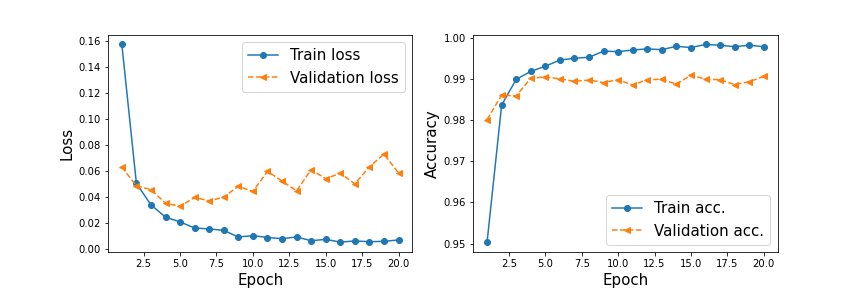
model = nn.Sequential()
model.add_module(
'conv1', nn.Conv2d(in_channels=3,
out_channels=32,
kernel_size=3,
padding=1))
model.add_module('relu1', nn.ReLU())
model.add_module('pool1', nn.MaxPool2d(kernel_size=2))
model.add_module('dropout1', nn.Dropout(p=0.5))
model.add_module(
'conv2',
nn.Conv2d(in_channels=32, out_channels=64, kernel_size=3, padding=1))
model.add_module('relu2', nn.ReLU())
model.add_module('pool2', nn.MaxPool2d(kernel_size=2))
model.add_module('dropout2', nn.Dropout(p=0.5))
model.add_module(
'conv3',
nn.Conv2d(in_channels=64, out_channels=128, kernel_size=3, padding=1))
model.add_module('relu3', nn.ReLU())
model.add_module('pool3', nn.MaxPool2d(kernel_size=2))
model.add_module(
'conv4',
nn.Conv2d(in_channels=128, out_channels=256, kernel_size=3, padding=1))
model.add_module('relu4', nn.ReLU())
x = torch.ones((4, 3, 64, 64))
model(x).shape
torch.Size([4, 256, 8, 8])
model.add_module('pool4', nn.AvgPool2d(kernel_size=8))
model.add_module('flatten', nn.Flatten())
x = torch.ones((4, 3, 64, 64))
model(x).shape
torch.Size([4, 256])
model.add_module('fc', nn.Linear(256, 1))
model.add_module('sigmoid', nn.Sigmoid())
x = torch.ones((4, 3, 64, 64))
model(x).shape
torch.Size([4, 1])
model
Sequential(
(conv1): Conv2d(3, 32, kernel_size=(3, 3), stride=(1, 1), padding=(1, 1))
(relu1): ReLU()
(pool1): MaxPool2d(kernel_size=2, stride=2, padding=0, dilation=1, ceil_mode=False)
(dropout1): Dropout(p=0.5, inplace=False)
(conv2): Conv2d(32, 64, kernel_size=(3, 3), stride=(1, 1), padding=(1, 1))
(relu2): ReLU()
(pool2): MaxPool2d(kernel_size=2, stride=2, padding=0, dilation=1, ceil_mode=False)
(dropout2): Dropout(p=0.5, inplace=False)
(conv3): Conv2d(64, 128, kernel_size=(3, 3), stride=(1, 1), padding=(1, 1))
(relu3): ReLU()
(pool3): MaxPool2d(kernel_size=2, stride=2, padding=0, dilation=1, ceil_mode=False)
(conv4): Conv2d(128, 256, kernel_size=(3, 3), stride=(1, 1), padding=(1, 1))
(relu4): ReLU()
(pool4): AvgPool2d(kernel_size=8, stride=8, padding=0)
(flatten): Flatten(start_dim=1, end_dim=-1)
(fc): Linear(in_features=256, out_features=1, bias=True)
(sigmoid): Sigmoid()
)
device = torch.device('cuda' if torch.cuda.is_available() else 'cpu')
model = model.to(device)
loss_fn = nn.BCELoss()
optimizer = torch.optim.Adam(model.parameters(), lr=0.001)
def train(model, num_epochs, train_dl, valid_dl):
loss_hist_train = [0] * num_epochs
accuracy_hist_train = [0] * num_epochs
loss_hist_valid = [0] * num_epochs
accuracy_hist_valid = [0] * num_epochs
for epoch in range(num_epochs):
model.train()
for x_batch, y_batch in train_dl:
x_batch = x_batch.to(device)
y_batch = y_batch.to(device)
pred = model(x_batch)[:, 0]
loss = loss_fn(pred, y_batch.float())
loss.backward()
optimizer.step()
optimizer.zero_grad()
loss_hist_train[epoch] += loss.item() * y_batch.size(0)
is_correct = ((pred >= 0.5).float() == y_batch).float()
accuracy_hist_train[epoch] += is_correct.sum().cpu()
loss_hist_train[epoch] /= len(train_dl.dataset)
accuracy_hist_train[epoch] /= len(train_dl.dataset)
model.eval()
with torch.no_grad():
for x_batch, y_batch in valid_dl:
x_batch = x_batch.to(device)
y_batch = y_batch.to(device)
pred = model(x_batch)[:, 0]
loss = loss_fn(pred, y_batch.float())
loss_hist_valid[epoch] += loss.item() * y_batch.size(0)
is_correct = ((pred >= 0.5).float() == y_batch).float()
accuracy_hist_valid[epoch] += is_correct.sum().cpu()
loss_hist_valid[epoch] /= len(valid_dl.dataset)
accuracy_hist_valid[epoch] /= len(valid_dl.dataset)
print(
f'Epoch {epoch+1} accuracy: {accuracy_hist_train[epoch]:.4f} val_accuracy: {accuracy_hist_valid[epoch]:.4f}'
)
return loss_hist_train, loss_hist_valid, accuracy_hist_train, accuracy_hist_valid
torch.manual_seed(1)
num_epochs = 10
hist = train(model, num_epochs, train_dl, valid_dl)
Epoch 1 accuracy: 0.6198 val_accuracy: 0.7120
Epoch 2 accuracy: 0.6973 val_accuracy: 0.6780
Epoch 3 accuracy: 0.7188 val_accuracy: 0.7410
Epoch 4 accuracy: 0.7377 val_accuracy: 0.7840
Epoch 5 accuracy: 0.7458 val_accuracy: 0.7920
Epoch 6 accuracy: 0.7602 val_accuracy: 0.7980
Epoch 7 accuracy: 0.7864 val_accuracy: 0.8130
Epoch 8 accuracy: 0.8075 val_accuracy: 0.8460
Epoch 9 accuracy: 0.8178 val_accuracy: 0.8500
Epoch 10 accuracy: 0.8322 val_accuracy: 0.8430
x_arr = np.arange(len(hist[0])) + 1
_, axes = plt.subplots(1, 2, figsize=(10, 4), constrained_layout=True)
axes[0].plot(x_arr, hist[0], '-o', label='Train loss')
axes[0].plot(x_arr, hist[1], '--<', label='Validation loss')
axes[0].legend(fontsize=15)
axes[0].set_xlabel('Epoch', size='medium')
axes[0].set_ylabel('Loss', size='medium')
axes[1].plot(x_arr, hist[2], '-o', label='Train acc.')
axes[1].plot(x_arr, hist[3], '--<', label='Validation acc.')
axes[1].legend(fontsize=15)
axes[1].set_xlabel('Epoch', size='medium')
axes[1].set_ylabel('Accuracy', size='medium')
#plt.savefig('figures/14_17.png', dpi=300)
plt.show()
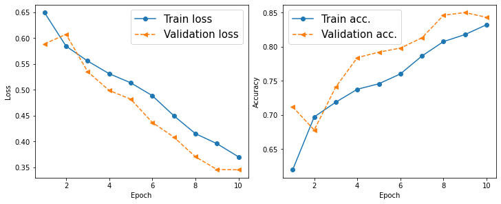
accuracy_test = 0
model.eval()
with torch.no_grad():
for x_batch, y_batch in test_dl:
x_batch = x_batch.to(device)
y_batch = y_batch.to(device)
pred = model(x_batch)[:, 0]
is_correct = ((pred >= 0.5).float() == y_batch).float()
accuracy_test += is_correct.sum().cpu()
accuracy_test /= len(test_dl.dataset)
print(f'Test accuracy: {accuracy_test:.4f}')
Test accuracy: 0.8314
pred = model(x_batch)[:, 0] * 100
fig = plt.figure(figsize=(15, 7))
for j in range(10, 20):
ax = fig.add_subplot(2, 5, j - 10 + 1)
ax.set(xticks=[], yticks=[])
ax.imshow(x_batch[j].cpu().permute(1, 2, 0))
if y_batch[j] == 1:
label = 'Smile'
else:
label = 'Not Smile'
ax.text(0.5,
-0.15,
f'GT: {label:s}\nPr(Smile)={pred[j]:.0f}%',
size=16,
horizontalalignment='center',
verticalalignment='center',
transform=ax.transAxes)
#plt.savefig('figures/figures-14_18.png', dpi=300)
plt.show()
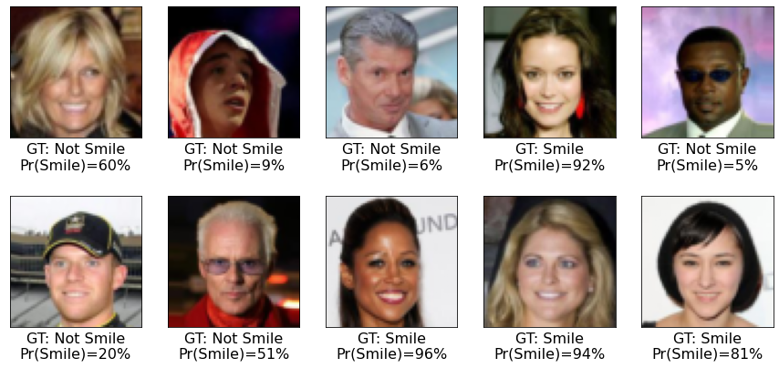
path = '../../datasets/torch/celeba-cnn.ph'
torch.save(model, path)